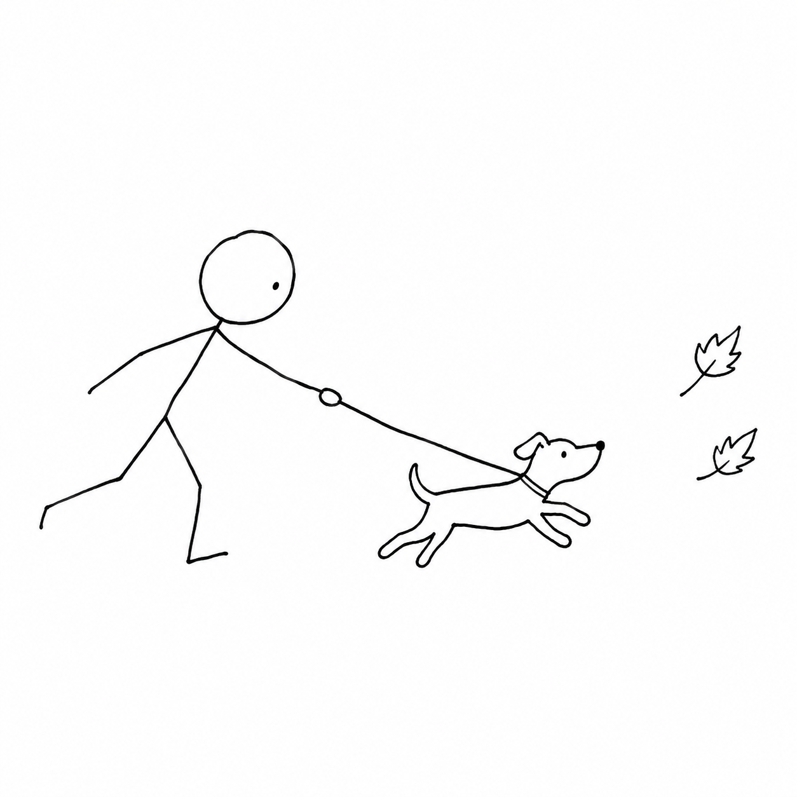

A SMALL MOMENT, A FEW LITTLE LINES.
A moment together,
kept on paper.
Write a small scene and turn it into a pet memory drawn in a few black ballpoint-pen lines.
Try changing the scene, then view, copy or download the full prompt. The image is a real sample made earlier; to make new images, run the app locally with your own API key.
Write down the moment
See the full promptWaiting for the local server
Below is the prompt the local server built from the two boxes above.
Connecting to the local server…
A little drawing
v2 prompt sample
BEHIND THE LITTLE DRAWING
Design and reuse
A simple process you can check. Take the prompt with you, or follow the README to run it on your own computer.
- 1
Write the scene
Describe an action and list the objects to keep. Your words are used as written; no model summarizes them.
- 2
Apply the fixed v2 rules
The scene goes into the v2 prompt: thin black lines, white background, few strokes, only the listed objects, and pets with four legs.
- 3
Image model output
With a key set, the local app asks for one PNG when you click Generate. The online demo shows an existing sample and never calls the image model.
Why it works this way
- Minimal, but still a pet
- Less fur and background detail, but the animal keeps its four legs, so the action is the focus.
- One template for every try
- The default scene matches the chosen v2 prompt. New scenes keep the same style rules, so results are easy to compare.
- Page and generation kept apart
- The page handles input, preview and downloads. The template and the image request are separate, so they are easy to move into your own product.
- The key stays on the server
- Real generation reads the key from the local server's environment. The page never receives or stores an API key, and the online demo needs none.
- A sample is labeled as a sample
- The existing image is always marked as a sample. Editing text only updates the prompt; no fake generation is shown.